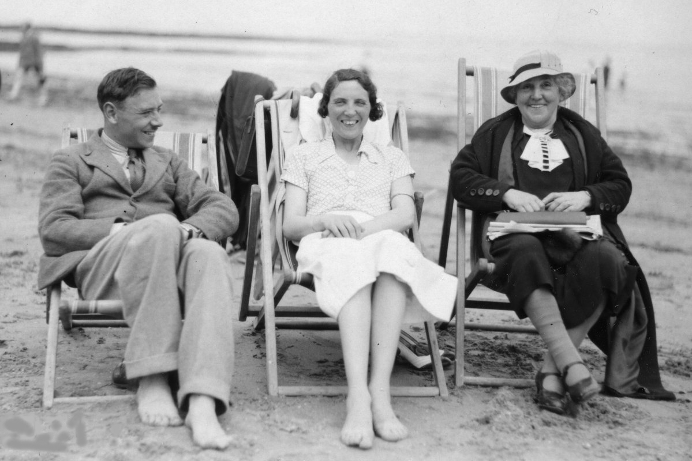
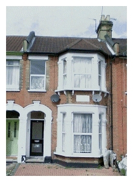

|
Recollections of Gangan
by John Winsor, April 2009.
|
"The past is another country: they do things differently there." (L.P. Hartley).
|  |
Gangan, Daisy & Ralph in 1935
|
As is my wont, from time-to-time, I promulgate herewith a few more rambling notes concerning the Handley family, this time about Gangan in particular. On the day I was born Gangan would have been in her late sixties, and my earliest memories of her are of an elderly person. A child's view of the world is without the perspective of time, of course, so it had seemed to me that Gangan must always have been elderly. It was as though she had been born elderly. So I was very impressed when, within the last twenty years, I discovered the photograph which showed Gangan as I had never seen her before, a woman aged about forty together with her young family. This brilliant photograph of the Handley family taken in 1910, that now graces the front page of this Website, was never shown to me. My mother kept it wrapped in brown paper, tied with string and placed at the back of a cupboard. This was, no doubt, because the picture featured my mother's father. But, even so, my mother evidently could not bear to throw it away. I discovered the picture after my parents moved to Bromley, and tore open the brown paper enough to reveal the photo. But I never mentioned this to my mother because I sensed that some kind of taboo applied here. My memories of Gangan are of a kindly and concerned person who loved her children and grandchildren. When she stayed at our house she seemed forever sewing buttons and darning socks. She was very pious and would attend church every Sunday without fail. Her faith was simple and strong. Intellectual she was not. I remember that Gangan had an idiosyncratic aversion to the police. She would come out with sayings like: "Set a thief to catch a thief." My mother would blame Uncle Will (see ahead), the suggestion being that Gangan had been "brainwashed" by him. While it may be true that Uncle Will was somewhere to the left of Lenin, I doubted his power to brainwash anyone. Hence the origin of Gangan's prejudice remains a mystery. In consequence, perhaps, of Gangan's family origins in East London she spoke with a dialect slightly different to my own. Today the only differences that come to mind are her use of the term "a twelvemonth" (meaning a year) and her use of the verb "to hark" (meaning to listen). In later life Gangan became profoundly deaf in both ears. There was a family myth that this was the consequence of a severe bout of 'flu'. I have no doubt that the cause was a genetic predisposition linked to the physical deterioration of old age. My mother suffered deafness in an identical way (although I believe Dora was largely unaffected). Gangan would wear a hearing-aid of early design containing "valves" (evacuated electronic glass tubes). This required heavy batteries which she carried in a home-made "kangaroo" style pouch under her skirt. Gangan lived alone at 72 De Vere Gardens about a mile from our home in Ilford. The photo is displayed to the right. This was a typical mid-terrace Victorian house with sash bay windows and a small back garden. But one day (in the late 1940's) I was told that she had moved to Preston Park, Brighton to live in the home of Uncle "Will" Watson and his daughter Cissie Watson. Uncle Will was a little older than Gangan and was related to her by marriage to his late wife Aunt Alice (Gangan's sister). Later, Gangan moved again to live in a rented bed-sit near to Preston Park. So it appears, from this distance in time, that the house in De Vere Gardens had become too much to manage. That is understandable for a person aged around 80. It seems likely that Gangan's welfare had become a matter of desperation to her daughters and their spouses. In today's circumstances the problem might have been resolved by the purchase of a ground-floor flat in Ilford. But the social climate of that time was very different. The national economy was still shattered by the war and accommodation in London would have been difficult to obtain due to mass demobilisation of the armed forces. The Welfare State was born only in 1948, hence there was no social housing. Very few flats were purpose-built pre-war. Having said this, I am inclined to think that Gangan's time in Brighton was probably a mistake. |